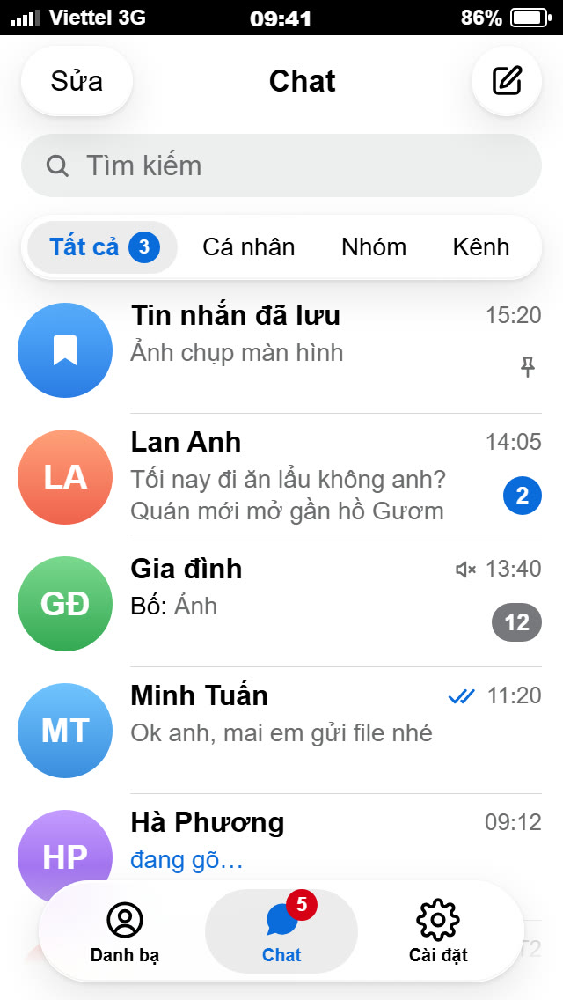

GramMini 2.0.1
Telegram cho iOS 5 / iOS 6 đã jailbreak



Mới trong bản 2.0.1
Quản lý nhóm: thêm thành viên (danh bạ hoặc @tên), cấp / bỏ quyền quản trị, xoá khỏi nhóm, đổi tên / mô tả, link mời
Mở phòng thoại nhóm: người tạo / quản trị viên chạm nút điện thoại ở đầu chat nhóm để bắt đầu
Gọi video chỉ xem trên máy không camera (iPad 1); gọi video trên máy yếu không còn đứng máy
Bản 2.0.0
Gọi video 1-1, gọi được với app Telegram chính thức; bật / tắt camera, chạm ô xem trước để đổi camera trước / sau (iPad 1 chỉ xem)
Phòng thoại nhóm: nút điện thoại xanh ở đầu chat nhóm / kênh khi phòng đang mở — vào phòng, nghe / nói, thấy ai đang nói
Stories: dải stories đầu danh sách chat, xem story ảnh / video, đăng story ảnh
Chat bí mật: mã hoá đầu-cuối như app chính thức (Thông tin người dùng → Bắt đầu chat bí mật), tin tự huỷ sau khi xem — bản đầu chỉ tin chữ
Bản 1.9.0
Nhiều tài khoản: Cài đặt → Tài khoản → Thêm tài khoản; chạm để chuyển (mỗi lúc một tài khoản nhận tin)
Phiên đăng nhập được mã hoá, khoá nằm trong Keychain của máy — chép tệp sang máy khác không dùng được
Tự chạy lại khi bị vuốt tắt khỏi thanh đa nhiệm, để không lỡ tin / cuộc gọi (tắt được trong Cài đặt → Thông báo)
Nhận tin khi chạy nền ổn định hơn nữa
Bản 1.8.0
Cuộc gọi đến khi máy khoá: tên người gọi + thanh trượt «trả lời» ngay trên màn khoá; đang dùng app khác thì có hộp Trả lời / Từ chối; màn hình tự sáng
Emoji mới hiện đúng: emoji iOS 5 / 6 không có (kể cả cờ Việt Nam, emoji ghép) được vẽ bằng ảnh Twemoji
Nhận tin / cuộc gọi khi chạy nền ổn định hơn: sửa lỗi app bị iOS tắt vì thức dậy quá nhiều, và lỗi phải mở app sau khi khởi động lại mới nhận được tin
Tai nghe Bluetooth dùng được micro khi gọi; thông báo dồn dập được gộp lại
Bản 1.7.0
Đăng nhập bằng mã QR: quét bằng Telegram trên điện thoại khác (Cài đặt → Thiết bị → Kết nối thiết bị) — khỏi chờ mã
Nháp: chữ đang gõ dở lưu lên Telegram, mở lại chat hay sang máy khác vẫn còn; danh sách chat hiện «Nháp»
Bình luận kênh: bài có bình luận hiện nút «N bình luận», chạm để đọc và viết
Nhật ký sập: app bị thoát đột ngột thì lần sau hỏi xem nhật ký, gửi được cho nhóm GramMini để báo lỗi (không chứa nội dung tin nhắn)
Bản 1.6.1
Cuộc gọi gần đây (Cài đặt): cuộc gọi ở mọi chat riêng, lọc Tất cả / Nhỡ, chạm để gọi lại
Chuông nhẹ hơn: gói cài nhỏ lại, vẫn rung và theo công tắc im lặng
Bản 1.6.0
Gọi thoại 1-1 với người dùng Telegram trên mọi máy: nút gọi ở đầu chat riêng
Màn cuộc gọi kiểu kính: ảnh, tên, đồng hồ, vạch sóng; 4 emoji khoá — giống máy bên kia là cuộc gọi được mã hoá đầu-cuối
Loa ngoài / loa trong (áp tai tự tắt màn hình), tắt micro, khử tiếng vọng của iOS
Cuộc gọi đến: chuông + rung, Nghe / Từ chối; app ở nền vẫn báo «… đang gọi»; nghe ở máy này thì máy khác cùng tài khoản thôi đổ chuông
Giữ cuộc gọi khi về màn hình chính hoặc mở app khác; chat hiện «Cuộc gọi đi / đến / nhỡ»
Nhẹ hơn cho máy cũ: bộ mã âm thanh chạy kiểu số nguyên (cuộc gọi, tin nhắn thoại)
Bản 1.5.0
Giao diện mới kiểu iOS 26 / Telegram mới: nền trơn trắng / đen, nút dạng viên kính, thanh dưới nổi, Cài đặt bo góc
Danh sách chat: ô tìm kiếm hiện sẵn, thư mục dạng viên, biểu tượng tắt tiếng / ghim / đã đọc vẽ lại
Màn chat: tên trong viên kính, nút quay lại có số tin chưa đọc, ô nhập ba phần, nút gửi tròn
Giữ một tin: menu mới — nền mờ, thả cảm xúc nhanh, các thao tác chia nhóm
Ghim giấy: bảng đính kèm mới — ảnh gần đây, máy ảnh, thư viện, tệp, vị trí, mã QR, danh thiếp
Bản 1.4.5
Sửa lỗi máy iOS 6 vào safe mode khi nhận thông báo tin dài có emoji (xem trước bị cắt giữa emoji làm màn hình chính sập)
Bản 1.4.4
Biểu tượng mới: khối kính bo góc ánh cầu vồng, máy bay giấy trong suốt
Bản 1.4.3
Bản đồ lấy qua Telegram như app chính thức — máy chủ bản đồ khác không biết IP của bạn và chỗ bạn đang xem
Tra địa chỉ chỉ khi bạn chạm «chạm để tra địa chỉ»; sửa lỗi bản đồ tải chậm làm app báo «đang kết nối…»
Bản 1.4.2
Mini app của bot mở ngay trong GramMini (không ra Safari)
Nguồn Cydia có chữ ký GPG — gói cài kèm khoá của nguồn. Lần làm mới trước khi cập nhật có thể báo «NO_PUBKEY»: cập nhật GramMini xong là hết
Bản 1.4.1
Bot: nút «Menu» cạnh ô nhập (danh sách lệnh), bàn phím của bot tự hiện và không còn bị mất
Bảo mật: bản cập nhật tự động chỉ cài gói có chữ ký số của GramMini; sticker, tin thoại, video lạ không còn làm app tắt hay treo
Link lạ (gọi điện, link ẩn sau chữ khác) hỏi trước khi mở; khoá mật mã chặt hơn
Bản 1.4.0
Link t.me mở ngay trong app: chat, kênh, nhóm, nhảy tới tin; link mời hỏi «Tham gia»; nhóm / kênh chưa vào có nút «Tham gia»
Thả cảm xúc, bình chọn / câu đố (bỏ / rút phiếu), thanh tin ghim, ghim tin
Bot: nút bấm dưới tin, bàn phím của bot, «Bắt đầu» với bot mới
Nhắc hẹn / hẹn giờ gửi (nhấn giữ nút «Gửi»), tin nhắn nhanh (gõ «/»)
Vị trí trên bản đồ (lấy qua Telegram), mã QR chuyển khoản VietQR, danh thiếp
iPad: màn chia đôi — danh sách bên trái, cuộc trò chuyện bên phải
Bản 1.3.0
Nhóm có chủ đề (forum): danh sách chủ đề như app gốc, xem / gửi tin theo từng chủ đề, hoặc xem tất cả
Video H.265 (quay bằng máy mới — trước đây chỉ có tiếng): tự chuyển sang H.264 ngay trên máy để có hình; video có sẵn bản H.264 thì mở luôn
Bỏ dòng trích dẫn thừa «Tin nhắn …» ở tin trong chủ đề; tin hệ thống đổi tên / đóng / mở chủ đề
Bản 1.2.1
Sửa lỗi giờ đè lên dòng «cỡ · chạm để mở» ở tin có tệp đính kèm trên iPhone
Bản 1.2.0
Sticker video (WebM) chạy ngay trong chat, cả sticker nền trong suốt — giải mã VP9 tối ưu cho máy cũ
Xoá tin cho cả hai bên hoặc chỉ ở máy tôi; xoá cả chat riêng cho cả hai bên
Tin tự xoá: 1 ngày / 1 tuần / 1 tháng theo từng chat, hoặc mặc định cho chat mới (Quyền riêng tư)
Bản 1.1.0
Sticker động (TGS) chạy ngay trong chat — bộ vẽ Lottie viết riêng cho máy cũ
Sticker chạy 5 lượt rồi dừng để đỡ hao pin; cuộn qua lại thì chạy tiếp
Bản 1.0.0
Bản đầu tiên: giao diện iOS 6 kết hợp kính trong, chế độ sáng / tối
Chat riêng / nhóm / kênh: ảnh, video, tệp, tin thoại, sticker, GIF; lưu ảnh / video vào máy
Thư mục chat, tìm kiếm, danh bạ, tạo nhóm; bộ sticker như app gốc
MTProxy (dd, ee fake-TLS) và SOCKS5 khi nhà mạng chặn Telegram
Thông báo tin mới khi app ở nền; khoá app bằng mật mã
Tự cập nhật trong app, cài xong tự khởi động lại SpringBoard
Lưu ý
Cài xong bấm Restart SpringBoard — tweak GMNotify cho GramMini có mục «Thông báo» của iOS.
Máy: iOS 5.0 – 6.1.x (iPhone 4 / 4S / 5, iPad 1 – 4, iPad mini 1, iPod touch 4 / 5).